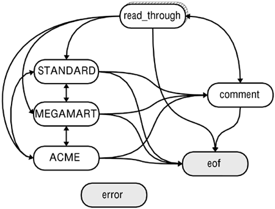

| [ Team LiB ] |
|
4.2 An Introduction to State MachinesState machines, in a theoretical sense, underlay almost everything computer- and programming-related. But a Python programmer does not necessarily need to consider highly theoretical matters in writing programs. Nonetheless, there is a large class of ordinary programming problems where the best and most natural approach is to explicitly code a state machine as the solution. At heart, a state machine is just a way of thinking about the flow control in an application. A parser is a specialized type of state machine that analyzes the components and meaning of structured texts. Generally a parser is accompanied by its own high-level description language that describes the states and transitions used by the implied state machine. The state machine is in turn applied to text obeying a "grammar." In some text processing problems, the processing must be stateful: How we handle the next bit of text depends upon what we have done so far with the prior text. In some cases, statefulness can be naturally expressed using a parser grammar, but in other cases the state has more to do with the semantics of the prior text than with its syntax. That is, the issue of what grammatical properties a portion of a text has is generally orthogonal to the issue of what predicates it fulfills. Concretely, we might calculate some arithmetic result on numeric fields, or we might look up a name encountered in a text file in a database, before deciding how to proceed with the text processing. Where the parsing of a text depends on semantic features, a state machine is often a useful approach. Implementing an elementary and generic state machine in Python is simple to do, and may be used for a variety of purposes. The third-party C-extension module mx.TextTools, which is discussed later in this chapter, can also be used to create far faster state machine text processors. 4.2.1 Understanding State MachinesA much too accurate description of a state machine is that it is a directed graph, consisting of a set of nodes and a set of transition functions. Such a machine "runs" by responding to a series of events; each event is in the domain of the transition function of the "current" node, where the range is a subset of the nodes. The function return is a "next" (maybe self-identical) node. A subset of the nodes are end-states; if an end-state is reached, the machine stops. An abstract mathematical description듧ike the one above들s of little use for most practical programming problems. Equally picayune is the observation that every program in an imperative programming language like Python is a state machine whose nodes are its source lines (but not really in a declarative듡unctional or constraint-based듧anguage such as Haskell, Scheme, or Prolog). Furthermore, every regular expression is logically equivalent to a state machine, and every parser implements an abstract state machine. Most programmers write lots of state machines without really thinking about it, but that fact provides little guidance to specific programming techniques. An informal, heuristic definition is more useful than an abstract one. Often we encounter a program requirement that includes a handful of distinct ways of treating clusters of events. Furthermore, it is sometimes the case that individual events need to be put in a context to determine which type of treatment is appropriate (as opposed to each event being "self-identifying"). The state machines discussed in this introduction are high-level machines that are intended to express clearly the programming requirements of a class of problems. If it makes sense to talk about your programming problem in terms of categories of behavior in response to events, it is likely to be a good idea to program the solution in terms of explicit state machines. 4.2.2 Text Processing State MachinesOne of the programming problems most likely to call for an explicit state machine is processing text files. Processing a text file very often consists of sequential reading of each chunk of a text file (typically either a character or a line), and doing something in response to each chunk read. In some cases, this processing is "stateless"듮hat is, each chunk has enough information internally to determine exactly what to do in response to that chunk of text. And in other cases, even though the text file is not 100 percent stateless, there is a very limited context to each chunk (for example, the line number might matter for the action taken, but not much else besides the line number). But in other common text processing problems, the text files we deal with are highly "stateful"듮he meaning of a chunk depends on what types of chunks preceded it (and maybe even on what chunks come next). Files like report files, mainframe data-feeds, human-readable texts, programming source files, and other sorts of text files are stateful. A very simple example of a stateful chunk is a line that might occur in a Python source file:* myObject = SomeClass(this, that, other) That line means something very different if it happens to be surrounded by these lines: """How to use SomeClass: myObject = SomeClass(this, that, other) """ That is, we needed to know that we were in a "blockquote" state to determine that the line was a comment rather than an action. Of course, a program that deals with Python programs in a more general way will usually use a parser and grammar. 4.2.3 When Not to Use a State MachineWhen we begin the task of writing a processor for any stateful text file, the first question we should ask ourselves is "What types of things do we expect to find in the file?" Each type of thing is a candidate for a state. These types should be several in number, but if the number is huge or indefinite, a state machine is probably not the right approach듨aybe some sort of database solution is appropriate. Or maybe the problem has not been formulated right if there appear to be that many types of things. Moreover, we are not quite ready for a state machine yet; there may yet be a simpler approach. It might turn out that even though our text file is stateful there is an easy way to read in chunks where each chunk is a single type of thing. A state machine is really only worth implementing if the transitions between types of text require some calculation based on the content within a single state-block. An example of a somewhat stateful text file that is nonetheless probably not best handled with a state machine is a Windows-style .ini file (generally replaced nowadays by use of the binary-data-with-API Windows registry). Those files consist of some section headers, some comments, and a number of value assignments. For example: File: hypothetical.ini; set the colorscheme and userlevel [colorscheme] background=red foreground=blue title=green [userlevel] login=2 ; admin=0 title=1 This example has no real-life meaning, but it was constructed to indicate some features of the .ini format. (1) In one sense, the type of each line is determined by its first character (either semicolon, left brace, or alphabetic). (2) In another sense, the format is "stateful" insofar as the keyword "title" presumably means something independent when it occurs in each section. You could program a text processor that had a COLORSCHEME state and a USERLEVEL state, and processed the value assignments of each state. But that does not seem like the right way to handle this problem. On the one hand, we could simply create the natural chunks in this text file with some Python code like: Chunking Python code to process .ini file
txt = open('hypothetical.ini').read()
from string import strip, split
nocomm = lambda s: s[0] != ';' # "no comment" util
eq2pair = lambda s: split(s,'=') # assignmet -> pair
def assignments(sect):
name, body = split(sect,']') # identify name, body
assigns = split(body,'\n') # find assign lines
assigns = filter(strip, assigns) # remove outside space
assigns = filter(None, assigns) # remove empty lines
assigns = filter(nocomm, assigns) # remove comment lines
assigns = map(eq2pair, assigns) # make name/val pairs
assigns = map(tuple, assigns) # prefer tuple pairs
return (name, assigns)
sects = split(txt,'[') # divide named sects
sects = map(strip, sects) # remove outside newlines
sects = filter(nocomm, sects) # remove comment sects
config = map(assignments, sects) # find assigns by sect
pprint.pprint(config)
Applied to the hypothetical.ini file above, this code produces output similar to:
[('colorscheme',
[('background', 'red'),
('foreground', 'blue'),
('title', 'green')]),
('userlevel',
[('login', '2'),
('title', '1')])]
This particular list-oriented data structure may or may not be what you want, but it is simple enough to transform this into dictionary entries, instance attributes, or whatever is desired. Or slightly modified code could generate other data representations in the first place. An alternative approach is to use a single current_section variable to keep track of relevant state and process lines accordingly:
for line in open('hypothetical.ini').readlines():
if line[0] == '[':
current_section = line[1:-2]
elif line[0] == ';':
pass # ignore comments
else:
apply_value(current_section, line)
Sidebar: A digression on functional programmingReaders will have noticed that the .ini chunking code given in the example above has more of a functional programming (FP) style to it than does most Python code (in this book or elsewhere). I wrote the presented code this way for two reasons. The more superficial reason is just to emphasize the contrast with a state machine approach. Much of the special quality of FP lies in its eschewal of state (see the discussion of functional programming in Chapter 1); so the example is, in a sense, even farther from a state machine technique than would be a coding style that used a few nested loops in place of the map() and filter() calls. The more substantial reason I adopted a functional programming style is because I feel that this type of problem is precisely the sort that can often be expressed more compactly and more clearly using FP constructs. Basically, our source text document expresses a data structure that is homogeneous at each level. Each section is similar to other sections; and within a section, each assignment is similar to others. A clear드nd stateless등ay to manipulate these sorts of implicit structures is applying an operation uniformly to each thing at a given level. In the example, we do a given set of operations to find the assignments contained within a section, so we might as well just map() that set of operations to the collection of (massaged, noncomment) sections. This approach is more terse than a bunch of nested for loops, while simultaneously (in my opinion) better expressing the underlying intention of the textual analysis. Use of a functional programming style, however, can easily be taken too far. Deeply nested calls to map(), reduce(), and filter() can quickly become difficult to read, especially if whitespace and function/variable names are not chosen carefully. Inasmuch as it is possible to write "obfuscated Python" code (a popular competition for other languages), it is almost always done using FP constructs. Warnings in mind, it is possible to create an even terser and more functional variant of the .ini chunking code (that produces identical results). I believe that the following falls considerably short of obfuscated, but will still be somewhat more difficult to read for most programmers. On the plus side, it is half the length of the prior code and is entirely free of accidental side effects: Strongly functional code to process .ini file
from string import strip, split
eq2tup = lambda s: tuple(split(s,'='))
splitnames = lambda s: split(s,']')
parts = lambda s, delim: map(strip, split(s, delim))
useful = lambda ss: filter(lambda s: s and s[0]!=';', ss)
config = map(lambda _:(_[0], map(eq2tup, useful(parts(_[1],'\n')))),
map(splitnames, useful(parts(txt,'['))) )
pprint.pprint(config)
In brief, this functional code says that a configuration consists of a list of pairs of (1) names plus (2) a list of key/value pairs. Using list comprehensions might make this expression clearer, but the example code is compatible back to Python 1.5 Moreover, the utility function names useful() and parts() go a long way towards keeping the example readable. Utility functions of this sort are, furthermore, potentially worth saving in a separate module for other use (which, in a sense, makes the relevant .ini chunking code even shorter). A reader exercise is to consider how the higher-order functions proposed in Chapter 1's section on functional programming could further improve the sort of "stateless" text processing presented in this subsection. 4.2.4 When to Use a State MachineNow that we have established not to use a state machine if the text file is "too simple," we should look at a case where a state machine is worthwhile. The utility Txt2Html is listed in Appendix D. Txt2Html converts "smart ASCII" files to HTML. In very brief recap, smart ASCII format is a text format that uses a few spacing conventions to distinguish different types of text blocks, such as headers, regular text, quotations, and code samples. While it is easy for a human reader or writer to visually parse the transitions between these text block types, there is no simple way to chunk a whole text file into its text blocks. Unlike in the .ini file example, text block types can occur in any pattern of alternation. There is no single delimiter that separates blocks in all cases (a blank line usually separates blocks, but a blank line within a code sample does not necessarily end the code sample, and blocks need not be separated by blank lines). But we do need to perform somewhat different formatting behavior on each text block type for the correct final XML output. A state machine suggests itself as a natural solution here. The general behavior of the Txt2Html reader is as follows: (1) Start in a particular state. (2) Read a line of the text file and go to current state context. (3) Decide if conditions have been met to leave the current state and enter another. (4) Failing (3), process the line in a manner appropriate for the current state. This example is about the simplest case you would encounter, but it expresses the pattern described: A simple state machine input loop in Python
global state, blocks, newblock
for line in fpin.readlines():
if state == "HEADER": # blank line means new block of ?
if blankln.match(line): newblock = 1
elif textln.match(line): startText(line)
elif codeln.match(line): startCode(line)
else:
if newblock: startHead(line)
else: blocks[-1] += line
elif state == "TEXT": # blank line means new block of ?
if blankln.match(line): newblock = 1
elif headln.match(line): startHead(line)
elif codeln.match(line): startCode(line)
else:
if newblock: startText(line)
else: blocks[-1] += line
elif state == "CODE": # blank line does not change state
if blankln.match(line): blocks[-1] += line
elif headln.match(line): startHead(line)
elif textln.match(line): startText(line)
else: blocks[-1] += line
else:
raise ValueError, "unexpected input block state: "+state
The only real thing to notice is that the variable state is declared global, and its value is changed in functions like startText(). The transition conditions듭uch as textln.match()드re regular expression patterns, but they could just as well be custom functions. The formatting itself is actually done later in the program; the state machine just parses the text file into labeled blocks in the blocks list. In a sense, the state machine here is acting as a tokenizer for the later block processor. 4.2.5 An Abstract State Machine ClassIt is easy in Python to abstract the form of a state machine. Coding in this manner makes the state machine model of the program stand out more clearly than does the simple conditional block in the previous example (which doesn't right away look all that much different from any other conditional). Furthermore, the class presented드nd the associated handlers듟oes a very good job of isolating in-state behavior. This improves both encapsulation and readability in many cases. File: statemachine.py
class InitializationError(Exception): pass
class StateMachine:
def __init__(self):
self.handlers = []
self.startState = None
self.endStates = []
def add_state(self, handler, end_state=0):
self.handlers.append(handler)
if end_state:
self.endStates.append(name)
def set_start(self, handler):
self.startState = handler
def run(self, cargo=None):
if not self.startState:
raise InitializationError,\
"must call .set_start() before .run()"
if not self.endStates:
raise InitializationError, \
"at least one state must be an end_state"
handler = self.startState
while 1:
(newState, cargo) = handler(cargo)
if newState in self.endStates:
newState(cargo)
break
elif newState not in self.handlers:
raise RuntimeError, "Invalid target %s" % newState
else:
handler = newState
The StateMachine class is really all you need for the form of a state machine. It is a whole lot fewer lines than something similar would require in most languages듨ostly because of the ease of passing function objects in Python. You could even save a few lines by removing the target state check and the self.handlers list, but the extra formality helps enforce and document programmer intention. To actually use the StateMachine class, you need to create some handlers for each state you want to use. A handler must follow a particular pattern. Generally, it should loop indefinitely; but in any case it must have some breakout condition(s). Each pass through the state handler's loop should process another event of the state's type. But probably even before handling events, the handler should check for breakout conditions and determine what state is appropriate to transition to. At the end, a handler should pass back a tuple consisting of the target state's name and any cargo the new state handler will need. An encapsulation device is the use of cargo as a variable in the StateMachine class (not necessarily called cargo by the handlers). This is used to pass around "whatever is needed" by one state handler to take over where the last state handler left off. Most typically, cargo will consist of a file handle, which would allow the next handler to read some more data after the point where the last state handler stopped. But a database connection might get passed, or a complex class instance, or a tuple with several things in it. 4.2.6 Processing a Report with a Concrete State MachineA moderately complicated report format provides a good example of some processing amenable to a state machine programming style드nd specifically, to use of the StateMachine class above. The hypothetical report below has a number of state-sensitive features. Sometimes lines belong to buyer orders, but at other times the identical lines could be part of comments or the heading. Blank lines, for example, are processed differently from different states. Buyers, who are each processed according to different rules, each get their own machine state. Moreover, within each order, a degree of stateful processing is performed, dependent on locally accumulated calculations: Sample Buyer/Order ReportMONTHLY REPORT -- April 2002 =================================================================== Rules: - Each buyer has price schedule for each item (func of quantity). - Each buyer has a discount schedule based on dollar totals. - Discounts are per-order (i.e., contiguous block) - Buyer listing starts with line containing ">>", then buyer name. - Item quantities have name-whitespace-number, one per line. - Comment sections begin with line starting with an asterisk, and ends with first line that ends with an asterisk. >> Acme Purchasing widgets 100 whatzits 1000 doodads 5000 dingdongs 20 * Note to Donald: The best contact for Acme is Debbie Franlin, at * 413-555-0001. Fallback is Sue Fong (call switchboard). * >> Megamart doodads 10k whatzits 5k >> Fly-by-Night Sellers widgets 500 whatzits 4 flazs 1000 * Note to Harry: Have Sales contact FbN for negotiations * * Known buyers: >> Acme >> Megamart >> Standard (default discounts) * *** LATE ADDITIONS *** >> Acme Purchasing widgets 500 (rush shipment)** The code to processes this report below is a bit simplistic. Within each state, almost all the code is devoted merely to deciding when to leave the state and where to go next. In the sample, each of the "buyer states" is sufficiently similar that they could well be generalized to one parameterized state; but in a real-world application, each state is likely to contain much more detailed custom programming for both in-state behavior and out-from-state transition conditions. For example, a report might allow different formatting and fields within different buyer blocks. buyer_invoices.py
from statemachine import StateMachine
from buyers import STANDARD, ACME, MEGAMART
from pricing import discount_schedules, item_prices
import sys, string
#-- Machine States
def error(cargo):
# Don't want to get here! Unidentifiable line
sys.stderr.write('Unidentifiable line:\n'+ line)
def eof(cargo):
# Normal termination -- Cleanup code might go here.
sys.stdout.write('Processing Successful\n')
def read_through(cargo):
# Skip through headers until buyer records are found
fp, last = cargo
while 1:
line = fp.readline()
if not line: return eof, (fp, line)
elif line[:2] == '>>': return whichbuyer(line), (fp, line)
elif line[0] == '*': return comment, (fp, line)
else: continue
def comment(cargo):
# Skip comments
fp, last = cargo
if len(last) > 2 and string.rstrip(last)[-1:] == '*':
return read_through, (fp, '')
while 1:
# could save or process comments here, if desired
line = fp.readline()
lastchar = string.rstrip(line)[-1:]
if not line: return eof, (fp, line)
elif lastchar == '*': return read_through, (fp, line)
def STANDARD(cargo, discounts=discount_schedules[STANDARD],
prices=item_prices[STANDARD]):
fp, company = cargo
invoice = 0
while 1:
line = fp.readline()
nextstate = buyerbranch(line)
if nextstate == 0: continue # blank line
elif nextstate == 1: # order item
invoice = invoice + calc_price(line, prices)
else: # create invoice
pr_invoice(company, 'standard', discount(invoice,discounts))
return nextstate, (fp, line)
def ACME(cargo, discounts=discount_schedules[ACME],
prices=item_prices[ACME]):
fp, company = cargo
invoice = 0
while 1:
line = fp.readline()
nextstate = buyerbranch(line)
if nextstate == 0: continue # blank line
elif nextstate == 1: # order item
invoice = invoice + calc_price(line, prices)
else: # create invoice
pr_invoice(company, 'negotiated', discount(invoice,discounts))
return nextstate, (fp, line)
def MEGAMART(cargo, discounts=discount_schedules[MEGAMART],
prices=item_prices[MEGAMART]):
fp, company = cargo
invoice = 0
while 1:
line = fp.readline()
nextstate = buyerbranch(line)
if nextstate == 0: continue # blank line
elif nextstate == 1: # order item
invoice = invoice + calc_price(line, prices)
else: # create invoice
pr_invoice(company, 'negotiated', discount(invoice,discounts))
return nextstate, (fp, line)
#-- Support function for buyer/state switch
def whichbuyer(line):
# What state/buyer does this line identify?
line = string.upper(string.replace(line, '-', ''))
find = string.find
if find(line,'ACME') >= 0: return ACME
elif find(line,'MEGAMART')>= 0: return MEGAMART
else: return STANDARD
def buyerbranch(line):
if not line: return eof
elif not string.strip(line): return 0
elif line[0] == '*': return comment
elif line[:2] == '>>': return whichbuyer(line)
else: return 1
#-- General support functions
def calc_price(line, prices):
product, quant = string.split(line)[:2]
quant = string.replace(string.upper(quant),'K','000')
quant = int(quant)
return quant*prices[product]
def discount(invoice, discounts):
multiplier = 1.0
for threshhold, percent in discounts:
if invoice >= threshhold: multiplier = 1 - float(percent)/100
return invoice*multiplier
def pr_invoice(company, disctype, amount):
print "Company name:", company[3:-1], "(%s discounts)" % disctype
print "Invoice total: $", amount, '\n'
if __name__== "__main__":
m = StateMachine()
m.add_state(read_through)
m.add_state(comment)
m.add_state(STANDARD)
m.add_state(ACME)
m.add_state(MEGAMART)
m.add_state(error, end_state=l)
m.add_state(eof, end_state=l)
m.set_start(read_through)
m.run((sys.stdin, ''))
The body of each state function consists mostly of a while 1: loop that sometimes breaks out by returning a new target state, along with a cargo tuple. In our particular machine, cargo consists of a file handle and the last line read. In some cases, the line that signals a state transition is also needed for use by the subsequent state. The cargo could contain whatever we wanted. A flow diagram lets you see the set of transitions easily: All of the buyer states are "initialized" using default argument values that are never changed during calls by a normal state machine .run() cycle. You could also perhaps design state handlers as classes instead of as functions, but that feels like extra conceptual overhead to me. The specific initializer values are contained in a support module that looks like: pricing.py support data
from buyers import STANDARD, ACME, MEGAMART, BAGOBOLTS
# Discount consists of dollar requirement and a percentage reduction
# Each buyer can have an ascending series of discounts, the highest
# one applicable to a month is used.
discount_schedules = {
STANDARD : [(5000,10),(10000,20),(15000,30),(20000,40)],
ACME : [(1000,10),(5000,15),(10000,30),(20000,40)],
MEGAMART : [(2000,10),(5000,20),(10000,25),(30000,50)],
BAGOBOLTS : [(2500,10),(5000,15),(10000,25),(30000,50)],
}
item_prices = {
STANDARD : {'widgets':1.0, 'whatzits':0.9, 'doodads':1.1,
'dingdongs':1.3, 'flazs':0.7},
ACME : {'widgets':0.9, 'whatzits':0.9, 'doodads':1.0,
'dingdongs':0.9, 'flazs':0.6},
MEGAMART : {'widgets':1.0, 'whatzits':0.8, 'doodads':1.0,
'dingdongs':1.2, 'flazs':0.7},
BAGOBOLTS : {'widgets':0.8, 'whatzits':0.9, 'doodads':1.1,
'dingdongs':1.3, 'flazs':0.5},
}
In place of reading in such a data structure, a full application might calculate some values or read them from a database of some sort. Nonetheless, the division of data, state logic, and abstract flow into separate modules makes for a good design. 4.2.7 Subgraphs and State ReuseAnother benefit of the state machine design approach is that you can use different start and end states without touching the state handlers at all. Obviously, you do not have complete freedom in doing so들f a state branches to another state, the branch target needs to be included in the list of "registered" states. You can, however, add homonymic handlers in place of target processing states. For example: Creating end states for subgraphs
from statemachine import StateMachine
from BigGraph import *
def subgraph_end(cargo): print "Leaving subgraph..."
foo = subgraph_end
bar = subgraph_end
def spam_return(cargo): return spam, None
baz = spam_return
if __name__=='__main__':
m = StateMachine()
m.add_state(foo, end_state=1)
m.add_state(bar, end_state=1)
m.add_state(baz)
map(m.add_state, [spam, eggs, bacon])
m.set_start(spam)
m.run(None)
In a complex state machine graph, you often encounter relatively isolated subgraphs. That is, a particular collection of states들.e., nodes듨ight have many connections between them, but only a few connections out to the rest of the graph. Usually this occurs because a subgraph concerns a related set of functionality. For processing the buyer report discussed earlier, only seven states were involved, so no meaningful subgraphs really exist. But in the subgraph example above, you can imagine that the BigGraph module contains hundreds or thousands of state handlers, whose targets define a very complex complete graph. Supposing that the states spam, eggs, and bacon define a useful subgraph, and all branches out of the subgraph lead to foo, bar, or baz, the code above could be an entire new application. The example redefined foo and bar as end states, so processing (at least in that particular StateMachine object) ends when they are reached. However, baz is redefined to transition back into the spam-eggs-bacon subgraph. A subgraph exit need not represent a termination of the state machine. It is actually the end_state flag that controls termination득ut if foo was not marked as an end state, it would raise a RuntimeError when it failed to return a valid state target. If you create large graphs든specially with the intention of utilizing subgraphs as state machines들t is often useful to create a state diagram. Pencil and paper are perfectly adequate tools for doing this; a variety of flow-chart software also exists to do it on a computer. The goal of a diagram is to allow you to identify clustered subgraphs and most especially to help identify paths in and out of a functional subgraph. A state diagram from our buyer report example is given as illustration. A quick look at Figure 4.1, for example, allows the discovery that the error end state is isolated, which might not have been evident in the code itself. This is not a problem, necessarily; a future enhancement to the diagram and handlers might utilize this state, and whatever logic was written into it. Figure 4.1. Buyer state machine diagram 4.2.8 Exercise: Finding other solutions
|
| [ Team LiB ] |
|